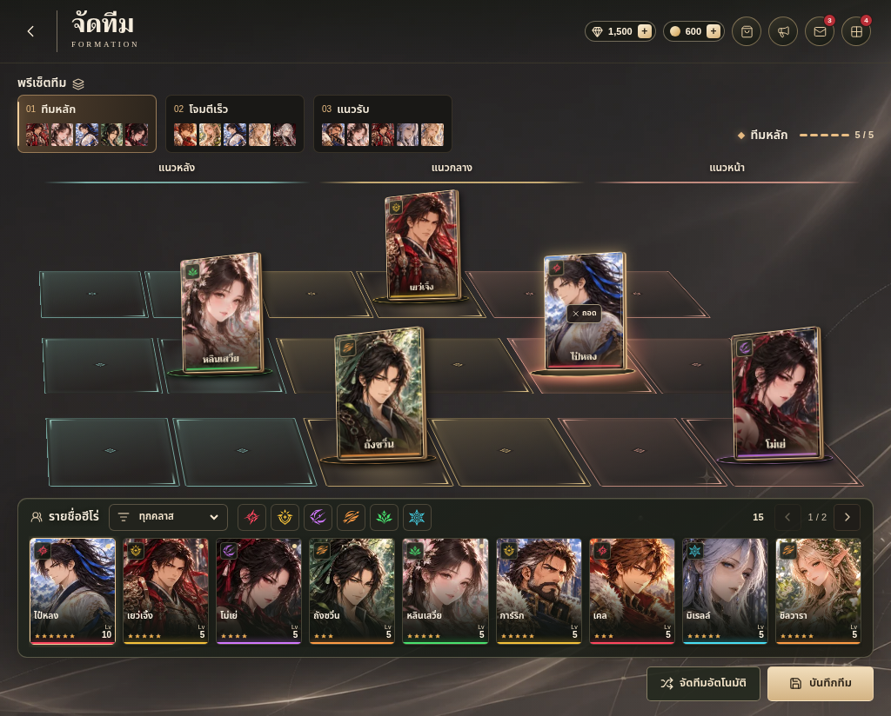
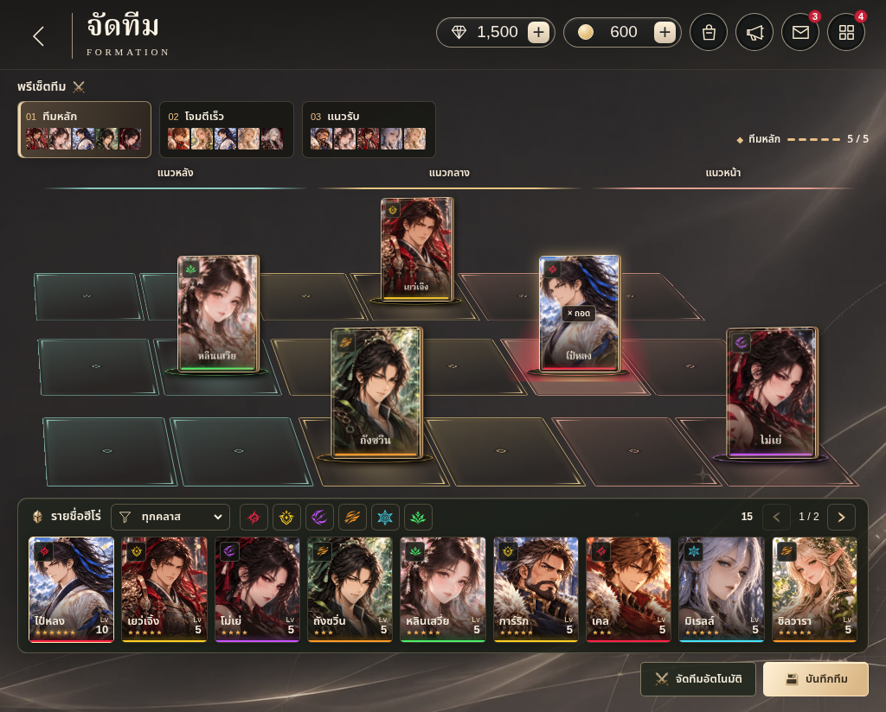

1024 × 824 พิกเซล · ทีมหลัก 5 คน · เลือกไป๋หลงอยู่ · เซฟทดสอบมีฮีโร่ 15 คน


ในเกมใช้แถบเมนูเดียวกับหน้าตัวละคร จึงเห็นไอคอนและตัวเลขใหญ่กว่าในแบบ อาร์ต ดาว และสถานะการจัดทีมใช้ข้อมูลจากเกม
การ์ดตั้งตรงขึ้น ขอบล่างวางเสมอฐาน และใช้แสงที่กรอบบอกสถานะเลือก
เกมจริงก่อนปรับการ์ด · เกมจริงหลังปรับที่ 1280 × 720 · กรองนักเวท · ลากเข้าช่องหลังการ์ด